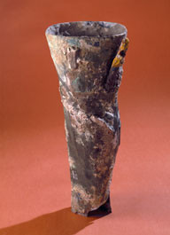

Prótesis, ¿desde cuándo existe?
Las primeras prótesis se mencionan en un libro sagrado hindú llamado Visphala, que representa a una mujer con una prótesis de hierro.
Prótesis antes de 1900
La pierna de Capua
La Pata de Capua es una prótesis del siglo III a.C. descubierta en 1885 en una tumba en Capua, Italia. Es una de las prótesis más antiguas que se conocen. El original fue destruido por un ataque aéreo durante la Segunda Guerra Mundial, y una copia se conserva en el Museo de Ciencias de Londres. El objeto es de madera y está cubierto de bronce. Su utilidad habría sido más estética que funcional.
Ambroise Paré y el siglo XV

Ambroise Paré es uno de los más grandes practicantes del Renacimiento, tan grande que fue llamado el padre de la cirugía moderna. Será el cirujano de príncipes y reyes, de Enrique II y sus descendientes: Francisco II, Carlos IX y Enrique III. Su lema era: "Labor improbus omnia vincit". ("El trabajo duro hace que todo valga la pena")
Ambroise Paré diseñó durante la época de la pólvora (que había causado cada vez más amputaciones) prótesis sofisticadas y mecanizadas destinadas a los más ricos.
La Guerra Civil y la Anestesia
Durante la Guerra Civil hubo un gran avance en el mundo de las prótesis porque la anestesia permitía una operación más larga y menos dolorosa para el paciente.
Prótesis después de 1900
En 1922, las prótesis de cadera
En 1950 se introdujo el invento del pie de goma sin juntas.
El pie SACH se inventó en los Estados Unidos. Es un pie de goma sin articulación. Es muy resistente pero está especialmente indicado para personas con poca actividad.
En 1960, la invención de la rodilla articulada
En 1960, en Inglaterra, la primera prótesis total de rodilla fue instalada por un cirujano inglés llamado John Charnley.

En 1970, se inventó la rodilla hidráulica...
Tiene la característica de proyectar la pierna hacia adelante por medio de un cilindro hidráulico, es decir, un cilindro que contiene un líquido impulsado por válvulas. La unidad hidráulica ayuda a que el movimiento de lanzamiento de la pierna sea más natural.
En 1974, Mittelmeier inventó una prótesis de cadera de cerámica.
Asume la función de la articulación, con el vástago introducido en el fémur y la cabeza y la copa al servicio de la movilidad de la articulación.
En 1997, las prótesis y los microprocesadores son
En 1997, se introdujo una prótesis de pierna controlada por microprocesador. Está equipado con sensores y sus movimientos se ajustan en tiempo real. En su versión actual, permite actividades como el ciclismo.
En 1998 se rompió el récord olímpico
Un atleta discapacitado con ambas piernas amputadas bate un récord olímpico.
En 2005, el brazo biónico
Nuestras políticas y condiciones de uso
Garantizamos que este sitio no busca hacer un seguimiento de usted y de sus datos personales para revenderlos a los mejores postores.
Qui sommes nous?
Somos cuatro estudiantes de informática en el IUT de Lannion y hemos decidido crear un sitio que presenta las diferentes prótesis existentes. Este sitio intenta responder al siguiente problema: ¿Cómo es que la informática revoluciona la fabricación de prótesis?